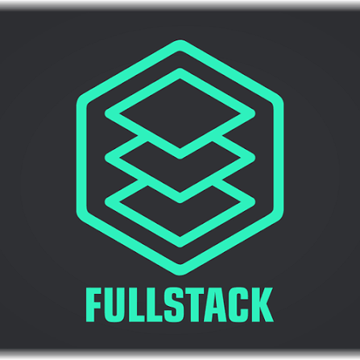

Men haqimda:

Mening GitHub profilimMen O'ktamov Qilichbek 16 yoshdaman. Men hozirda Full-stackni o'rganyapman, Claude yani yordamchi do'stim orqali o'rganyapman
Men dasturlashga ilovalar, saytlar va telegram botlar qanday qilib ishlaydi ularni kimlar yaratadi shularga qiziqib dasturlashni tanladim
Ko'nikmalarim:
- HTML
- CSS
- JavaScript
Maqsadlarim:
- TATUga o'qishga kirish
- TATUning 3 + 1 formati orqali Janubiy Koreyaga ham qolgan 1 yil o'qish
- Full-stack dasturchi bo'lib ishga kirish
- Odamlarning ishini osonlashtiradigan loyihalar qilish
1 yillik rejam
- HTML
- CSS
- JavaScript
- Git/GitHub
- Tailwind CSS
- TypeScript
- React
- Next.js
- PostgreSQL
- Node.js
- Express